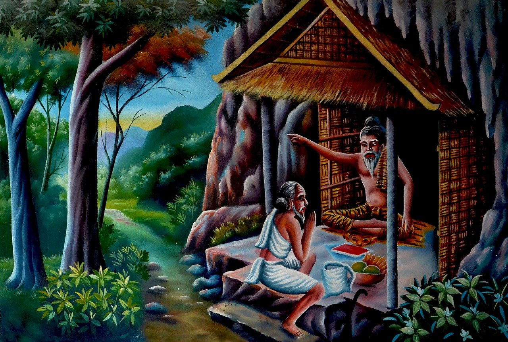

龍樹《十住毘婆沙論》．〈易行品〉概說
印海長老
龍樹在印度被稱為第二佛陀，對於大乘佛教，以其力量頓時勃興，著作頗多，在中國所翻譯有二十餘部。
其中《十住毘婆沙論》，是《華嚴經》．〈十地品〉之釋論，稱為《大不思議論》十萬偈之二部。共十七卷（或十五卷，又說十六卷）、三十五品（或三十六品）。十地之中解說初、二地。〈易行品〉在其第九品．第五卷。
〈易行品〉之解說，最初菩薩於阿惟越致地即初地，欲至不退轉地有兩種道：一是勤行精進，久久乃得，是名「難行道」，如陸路步行則為苦。二是以信行方便易行疾得阿惟越致地，名「易行道」，如水道之乘船則為樂。
其次，出於易行法中，首先列舉東方善德等現在十方十佛。其次舉出阿彌陀佛於世自王佛等現在一百餘佛。其次有三十二偈。其次是毘婆尸等過去七佛及未來彌勒佛。次有德勝等東方八佛，次有過去未來現在諸佛，次列舉有善意等一百四十三菩薩之名，於此身欲至阿惟越致者，應憶念此等諸佛及菩薩，憶念、恭敬、禮拜、稱其名號。依據此意，以意憶念諸佛菩薩，身恭敬、禮拜、口稱其名號，至阿惟越致，看出此是易行之法。
在〈易行品〉中，最初之長行中，「阿彌陀佛本願如是，若人念我稱名自歸，即入畢定，得阿耨多羅三藐三菩提」，應說是三十二行偈之總敘，易行道之精髓。其中「念我」者，意中憶念阿彌陀佛。「稱名」者，口中稱念阿彌陀佛之名號；「自歸」者，眾生自己歸命阿彌陀佛。「念我稱名」是眾生起行，「自歸」即是眾生之安心。若如是安心而起行者，即入必定能證得阿耨多羅三藐三菩提。因為〈易行品〉中以稱名為易行之法，由於聞我名號，當然能生起修行。
《平等覺經》第四（《大阿彌陀經》卷下大致相同）說：「皆大歡喜踊躍，悉起為無量清淨佛作禮，以頭著地，皆言南無無量清淨三藐三佛陀」，即是現在稱名之說。又，《阿彌陀經》說：「聞說阿彌陀佛，執持名號，若一日，乃至七日，一心不亂」，《觀無量壽經》說：「令聲不絕，具足十念，稱南無阿彌陀佛」，雖然皆是說明口稱之法，但其中諸譯的《無量壽經》中未見到稱名之說。
另外仔細在諸偈頌上研究，可以看出，與漢譯《平等覺經》之說頗多相似之處。依此可以證明論主龍樹菩薩主要以《平等覺經》之一類經為主，所述作此三十二偈，應無疑問。以下按其偈頌，略述其義。
第一偈說：「無量光明慧，身如真金山，我今身口意，合掌稽首禮」。首先讚歎彌陀之身色，與第二偈共同是說明光明無量願之成就文（漢譯平等覺經第十三願、魏譯無量壽經第十二願）不待言矣。
第二偈：「金色妙光明，普流諸世界，隨物增其色，是故稽首禮」，是讚歎光明之德用，應是漢譯第十三願之後半所說，即《平等覺經》第十三願說：「我作佛時，令我光明勝於日月，諸佛之明百億萬倍，照無數天下，窈冥之處皆常大明，諸天人民蠕動之類，見我光明，莫不慈心作善來生我國，不爾者，我不作佛」。
此中，說明諸天人民蠕動之類，見佛之光明，慈心作善，即物隨佛光增加其色，願中成就之文說到：諸泥犁、禽獸、薜荔拷掠勤苦之處，見無量清淨佛光明至，皆休止不得復治，死後莫不得解脫憂苦者也之說相符合。佛之光明，普照諸世界，特別對三途勤苦增加其光用，解脫憂苦。宋、元、明三譯本表示增加作用，依麗本而增加用字更為殊勝也。
第三偈說：「若人命終時，得生彼國者，即具無量德，是故我歸命」。總說，是讚歎往生之利益，引起其次之八偈之事實。漢譯是光明願成就之終末文。文說：「其有人民善男子、善女人，聞無量清淨佛聲，稱譽光明。如是朝暮常稱譽其光明相好，至心不斷絕，在心所欲願，往生無量清淨佛國。」可得為諸菩薩、阿羅漢所尊敬慧勇猛之說相符合。
第四偈說：「人能念是佛，無量力威德，即時入必定，是故我常念」，此是入定之利益，說明住正定聚願，出在（漢譯、魏譯皆是第十一願）成就之文不待言矣。因漢譯為始，諸本皆說：生彼淨土之中人民住正定聚，是此偈說：「即時入必定」，又前文中「欲於此身得至阿惟越致地」，〈易行品〉之意，是約此土不退而說。
第五偈說：「彼國人命終，故應受諸苦，不墮惡地獄，是故歸命禮」，是不更惡趣願（漢、魏二譯皆是第二願）之成就文。
第六偈說：「若人生彼國，終不墮三趣，及與阿修羅，我今歸命禮」，或為漢譯第十九願之成就之意。彼之願文中說：「我作佛時，他方佛國人民，前世為惡，聞我名字，及正為道，欲來生我國，壽終皆令不復更三惡道，則生我國，在心所願，不爾者，我不作佛」。又，吳譯《大阿彌陀經》中，除第八不更惡趣願之外，另有第五願中說：「使某作佛時，令八方上下，諸無央數天人民及蜎飛蠕動之類，若前世作惡，聞我名字，欲來生我國，即便反正自悔過，為道作善，便持經戒，願生我國不斷絕，壽終皆令不復泥犁、禽獸、薜荔，即生我國，在心所願，得是願乃作佛，不得是願，終不作佛。」
普通以此，雖然配合魏譯《無量壽經》二十之植諸德本之願，然而，此中文句之義完全不同。既然第五偈中說了不更惡趣願之成就意，不應於第六偈重說同一願之理，由此可見，此偈設若與經之譯文完全不相吻合，作者想定是取漢譯第十九願之意而作偈讚。
第七偈說：「人天身相同，猶如金山頂，諸勝所歸處，是故頭面禮」，是稱讚中漢譯第三「悉皆金色」、第四「無有好醜」（魏譯亦同）之兩願成就之意。
第八偈說：「其有生彼國，具天眼耳通，亦具宿命智，是故歸命禮」，是漢譯第六天眼智通（魏譯亦同），第九天耳智通（魏譯第七），兩願成就之意所說亦很明確。
第九偈說：「其國諸眾生，神變及心通，亦具宿命智，是故歸命禮」，說明是漢譯第八神足智通（魏譯第九），第七他心智通（魏譯第八），第五宿命智通（魏譯亦同）之三願成就文意。
第十偈說：「生彼國土者。無我無我所，不生彼此心，是故稽首禮」，此與讚第十漏盡通智願（魏譯亦同）之成就文意。以上八偈，是讚歎眾生往生者約其處所得利益。
第十一偈說：「超出三界獄，目如蓮花葉，聲聞眾無量，是故稽首禮」，說明第十二聲聞無數願（魏譯第十四）之成就文，歎佛子之勝德。若說已經超出三界獄，應知是阿羅漢之人，說「目如蓮花葉」是願成就之文，「諸菩薩、阿羅漢，面目皆端正，清潔絕好」是吻合的。
第十二偈說：「彼國諸眾生，其性皆柔和，自然行十善，稽首眾聖王」，嘆菩薩勝德中，首先舉自然行善之德，依《十住經》第一說，菩薩具足初地已，若欲得第二地，當生柔軟之十心，住第二地已修行十善道。現今此偈，主要是依據此經之意。又，《平等覺經》第一說：「都共往會，以義而禮，轉相敬事，如兄如弟，以仁履義，不妄動作，言語而誡，轉相教令，不相違戾，轉相承受。皆心潔淨，無所貪慕，終無有婬泆、瞋怒之心、愚癡之態也。無有邪心念婦女意也。悉智慧勇猛，和心歡樂，好喜經道云」。
看出又同第四中：無量清淨佛國，皆積德眾善，無為自然在所求索，無有諸惡大如毛髮云之說，是大致相符合的。稽首眾聖王，是本師彌陀，是此等菩薩眾聖中之王，故生稽首之意。
第十三偈說：「從善生淨明，無量無邊數，二是中等一，是故我歸命」，嘆菩薩之無數也。與《平等覺經》第一「但有菩薩、阿羅漢無央數」之說相符合。「從善生明淨」者，善根轉勝名為明淨。《十住經》第一說：「此十地是菩薩最上妙道，最上明淨法門」，是准此而說，總說十地功德善根名為「淨明」之意。
第十四偈說：「若人願作佛，心念阿彌陀，應時為現身，是故我歸命」，稱讚應念示現之德，在大經中沒有適合之文。以漢譯第十八願（魏譯第十九）有：「我作佛時，諸國人民有作菩薩道者，常念我淨潔心，壽終時，我與不可計比丘眾飛行迎之，共在前立，即還生我國，作阿惟越致」，此是所謂「來迎接引之願」，然而是臨終應現，但今旁依《般舟三昧經》之意，使令通於平生見佛之義，此偈是依於此經而製作的嗎？龍樹援引《般舟三昧經》說明念佛三昧之法事，出於《十住毘婆沙論》第九〈念佛品〉及《大智度論》第二十九等中。
第十五偈說：「彼佛本願力，十方諸菩薩，來供養聽法，是故我稽首」，此是以稱讚他方菩薩之供養聽法者，看出符合《平等覺經》的第二說：「八方上下諸無央數佛，更遣諸菩薩，飛至無量清淨佛所，聽經供養」之說明。
第十六偈說：「彼土諸菩薩，具足諸相好，以自莊嚴身，我今歸命禮」，是說明漢譯本第二十一之三十二相願（魏譯亦同）之成就文者。
第十七偈說：「彼諸大菩薩，日日於三時，供養十方佛，是故稽首禮」，是說明漢譯第二十二供養諸佛願（魏譯二十三）之成就。但經文中沒有「日日三時」之語句。
第十八偈說：「若人種善根，疑則華不開，信心清淨者，華開則見佛」，歎信心之勝能者。其中「疑則華不開」者，《平等覺經》第三說明三輩之人中，說中、下二輩之中悔之機，「華開則見佛」者，即讚其上輩之機。
第十九偈說：「十方現在佛，以種種因緣，歎彼佛功德，我今歸命禮」，是說明漢譯第十七諸佛稱揚願（魏譯亦同）之成就者，不待言矣。
第二十偈說：「其土具嚴飾，殊彼諸天宮，功德甚深厚，是故禮佛足」，此一偈總說彼佛國土中莊嚴功德成就。《平等覺經》第二說：「無量清淨佛國為諸無央數佛國中之雄國也，無量清淨佛國為諸無央數佛國中之珍寶也云」。又，無量清淨佛國土講堂舍宅，倍復殊勝於第六天王所居處百千億倍也，以及讚歎彼之國土伎樂音聲比第六天上之伎樂甚好無比，看出符合此偈之意。
第二十一及第二十二偈說：「佛足千輻輪，柔軟蓮花色，見者皆歡喜，頭面禮佛足。眉間白毫光，猶如清淨月，增益面光色，頭面禮佛足」，是稱讚佛身相好者，就中歎千輻輪及白毫相。《平等覺經》第二說：「如第六天王，今在無量清淨佛國中諸菩薩、阿羅漢住者，其面甚醜，尚復不如無量清淨佛國中諸菩薩、阿羅漢，面貌端正殊好百千倍萬倍也。佛言：無量清淨佛，諸菩薩、阿羅漢，面貌悉皆端正，絕好無比云，即是說明此意也。
第二十三偈說：「本求佛道時，行諸奇妙事，如諸經所說，頭面稽首禮」，是稱歎彌陀之因行。《平等覺經》第二說：「無量清淨佛國獨勝者何？本為菩薩求道時，所願勇猛精進不懈，累德所致故乃爾耳」之文相符合，亦即指《悲華》等諸經中本行菩薩道之事也。
第二十四及第二十五偈說：「彼佛所言說，破除諸罪根，美言多所益，我今稽首禮。以此美言說，救諸著樂病，已度今猶度，是故稽首禮」，此是稱歎佛說法之德。看出是與《平等覺經》第二說：「無量清淨佛，為諸菩薩阿羅漢說經竟，諸天人民中，未得須陀洹道者，則得須陀洹道，乃至中有未得阿惟越致菩薩者，則得阿惟越菩薩」之說大致相同。
第二十六偈說：「人天中最尊，諸天頭面禮，七寶冠摩足，是故我歸命」，此是歎人天致敬之德，與《平等覺經》第二讚說：「第一四天王諸天人、第二忉利天上諸天人，乃至上至三十六天上諸天人，皆持天上萬種自然之物，百種雜色華，百種雜香，百種雜繒綵，百種劫波育氈衣，萬種枝葉，轉倍好相勝，各持來下，為無量清淨佛作禮，則供養無量清淨佛及諸菩薩、阿羅漢」即此偈讚之意。
第二十七偈說：「一切賢聖眾，及諸人天眾，咸皆共歸命，是故我亦禮」。此是稱讚聖眾歸敬之德。看出與《平等覺經》第四中所說頗相吻合。如該經說：「諸菩薩、阿羅漢等，諸天帝王人民，悉皆見無量清淨佛及諸菩薩、阿羅漢國王七寶已，心皆大歡喜踊躍，悉起為無量清淨佛作禮，以頭腦著地，皆言：南無無量清淨三藐三佛陀」。
第二十八偈說：「乘彼八道船，能度難度海，自度亦度彼，我禮自在者」。總歎佛之教化。如《平等覺經》第三所說亦相符合。該經說：「無量清淨佛於世界教授，盡欲過度八方上下諸無央數佛國諸天人民及蜎飛蠕動之類，皆欲使往生其國，悉令得泥洹之道。其諸有作菩薩者，皆欲令悉作佛。作佛已，悉令轉復教授八方上下諸天人民及蜎飛蠕動之類云」。又說，「若曹亦可自決斷臭處惡露，若曹亦可端心正身益作諸善，於是當端中外，潔淨身體，洗除心垢，自相約檢，表裡相應，言行忠信。人能自度脫，轉相扶接，拔諸愛欲，精明至心，求願不轉，結其善道根本」。
《往生要集》卷中本有：「又無量清淨覺經云：阿彌陀佛與觀世音、大勢至，乘大願船，泛生死海，就此娑婆世界呼喚眾生令上大願船，送著西方。若眾生肯上大船者並皆得去」，亦與此偈相符合。此文完全援引迦才之《淨土論》卷下所出。《平等覺經》中無此段文字，又，彼論未說是《平等覺經》之說。此是援引者之過錯。
第二十九偈說：「諸佛無量劫，讚揚其功德，獨尚不能盡，歸命清淨人」，是讚德不盡之意。《平等覺經》第一說：「佛言：我道無量清淨佛光明殊好巍巍，稱譽快善，晝夜一劫尚未盡也」。又，同經第四說：「我說無量清淨佛功德，國土快善，晝夜一劫尚復未盡也」，看來與此偈相合。
第三十、三十一、三十二偈說：「我今亦如是，稱讚無量德，以是福因緣，願所獲上妙德，願諸眾生類，皆亦悉當得」，此是論主述說發願迴向之意，即偈頌之總結。